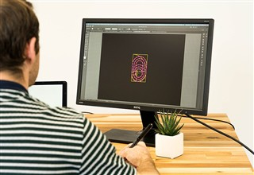

Proyectos de Ingeniería: A lo largo de mi carrera como Ingeniero de Sistemas y Docente he desarrollado diversos proyectos de software, páginas web educativas, redes de laboratorios y contenido multimedia.
"Cada proyecto es un nuevo reto donde aplico la ingeniería de sistemas para facilitar el trabajo de las personas, colegios y empresas."

-----------------------------------------------------------------------
NRO PROYECTO ÁREA ESTADO
-----------------------------------------------------------------------
01 Portafolio Profesional Web Desarrollo HTML Activo
02 Sistema Académico y Base de Datos Ingeniería Soft. Activo
03 Implementación de Servidores y Red Redes y Hardware Activo
04 Canal de YouTube Sergio Canaviri Multimedia Digital Activo
-----------------------------------------------------------------------
Enlaces externos a mis proyectos y referencias:
Visitar mi canal oficial de YouTube (@sergiocanavirifelix)